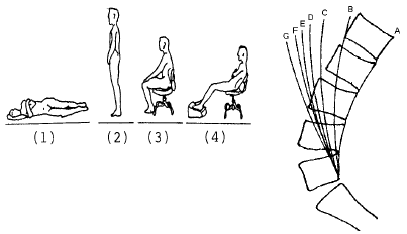
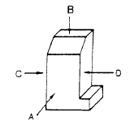
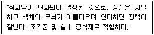

제품디자인기사 (2004-05-23 기출문제)
1과목: 제품디자인론
1. 형태에 대한 기초연습으로 자연이나 인공물의 형태 질서를 관찰, 파악, 변형해서 재현해 보는 것은?
- 양식화
- 형태화
- 추상화
- 비구상화
(정답률: 알수없음)

2. 다음 시세포 중에서 색채를 주로 식별할 수 있는 기능을 갖고 있는 것은?
- 추상체
- 간상체
- 홍채
- 수정체
(정답률: 알수없음)
3. 제품디자인 프로세스에 컴퓨터를 도입하여 얻을 수 있는 장점으로 볼 수 없는 것은?
- 독창적인 아이디어의 양산
- 손재주로부터의 해방
- 데이터 관리의 용이
- 다양한 조형시뮬레이션
(정답률: 알수없음)
4. 제품디자인의 역사적 단계별 특징을 설명한 것 중 틀린 것은?
- 최초단계- 의복 및 생활용품의 제작시기
- 숙련단계- 규격화를 바탕으로 대량생산화
- 기계화 단계- 산업혁명 이후의 생산기술 발달
- 과학화 단계- 가공기술의 과학화와 자동화
(정답률: 알수없음)
5. 디자인 의뢰자가 디자이너에게 약정된 요금으로 디자인의 저작권, 판매권을 독점할 수 있도록 디자인료를 결정하는 방식은?
- 의장 사용료제도
- 시간제도
- 일정 요금제도
- 전속 계약제도
(정답률: 알수없음)
6. 공업디자인의 조건에 부합되지 않는 것은?
- 합목적성
- 장식성
- 경제성
- 독창성
(정답률: 알수없음)
7. 디자인에서 물건과 시스템을 이해하는 원리를 명확히 하는데 그 목적이 있으며, 본질적으로 모든 디자이너가 직관적으로 알아야 한다고 주장하는 이론은?
- 신합리주의
- 합리주의
- 제품의미론
- 역사주의
(정답률: 알수없음)
8. 아르 데코(Art Deco)의 설명 중 틀린 것은?
- 1925년 파리「현대장식 산업미술 국제박람회」의 약칭에서 유래
- 화려한 색채와 고도의 기하학적 장식성, 우아한 기능의 표현
- 응용미술 및 패션을 비롯한 건축과 실내 디자인에 공헌
- 1890년대 유럽과 미국을 중심으로한 식물의 유기적인 곡선이 특징
(정답률: 알수없음)
9. 프로덕트 디자인과 커뮤니케이션 디자인을 부분적으로 포함하고 있으며 집약적인 의미의 사회적 공간 또는 인위적공간을 형성하는 디자인은?
- 그래픽디자인
- 환경디자인
- 포장디자인
- 전시디자인
(정답률: 알수없음)
10. 디자인에서 시각유도를 계획하는 것은?
- layout
- color
- texture
- cost
(정답률: 알수없음)
11. 1894년 반 데 벨데(Van de Velde)에 의해 선언되었던 새로운 예술인 아르누보(Art Nouveau)의 핵심이 된 것은?
- 직선적 표현
- 장식
- 과학성
- 표준화
(정답률: 알수없음)
12. 1970년대 중반부터 프랑스 저널리스트들이 이름 붙인 "레트로" 라고 하는 디자인 경향의 특성은?
- 미래지향적
- 복고주의적
- 절충주의적
- 초현실주의적
(정답률: 알수없음)
13. 카메라 부품의 호환성 처럼 사용 및 효용상의 연결에 따라 선택구매의 계획을 용이하게 하는 디자인 방법은?
- 세트(Set)
- 패밀리(Family)
- 시리즈(Series)
- 유니트(Unit)
(정답률: 알수없음)
14. 디자인 해결안 모색단계에서 이루어지는 주된 디자인 작업은?
- 렌더링
- 시장조사
- 이이디어 스케치
- 목업 제작
(정답률: 알수없음)
15. 바우하우스가 설립된 최초의 도시는?
- 뎃사우
- 시카고
- 뮌헨
- 바이마르
(정답률: 알수없음)
16. 오늘날 산업디자이너의 자세는 어떠해야 하는가?
- 스페셜 리스트(specialist)
- 어댑터(adapter)
- 제너럴 리스트(generalist)
- 델리커시(delicacy)
(정답률: 알수없음)
17. 인공적으로 만들어졌지만 마치 현실처럼 느껴지는 공간을 무엇이라고 하는가?
- 가상공간(virtual space)
- 착시공간(optical space)
- 암시적 공간(implied space)
- 환영적 공간(illusive space)
(정답률: 알수없음)
18. '독일의 아르누보'라고 불리는 양식은?
- 유겐트 스틸
- 비엔나 분리파
- 스틸 리버티
- 아르데 호벤
(정답률: 알수없음)
19. 아이디어 발상법 중 오스본(A.F. Osbon)이 고안한 것으로 팀으로 실시하며 단 시간에 다수의 아이디어를 얻을 수 있고 집단의 이점을 살릴 수 있는 것은?
- 매트릭스(matrix) 사고법
- 시네틱스(synectics)
- 브레인 스토밍법(brain storming)
- 입· 출력법(input-output)
(정답률: 알수없음)
20. 20세기 디자인의 원리를 형성한 헨리 반데 벨데의 양식운동은?
- 독일 공작연맹
- 유켄트스틸
- 아르 누보
- 아트 앤드 크라프트
(정답률: 알수없음)
2과목: 인간공학
21. 시각표시장치 보다 청각표시장치를 쓰는 것이 유리한 경우는?
- 메시지가 복잡한 경우
- 메시지가 후에 다시 참조되는 경우
- 메시지가 즉각적인 행동을 요구하는 경우
- 메시지가 공간적인 위치를 이루는 경우
(정답률: 알수없음)
22. 사람이 자동차나 비행기를 조종할 때 긴장감의 정도를 파악하기 위하여 심박수, 호흡율, 뇌전위, 혈압 등을 조사하는데, 이는 다음 중 어느 것을 지표로서 이용하는 경우인가?
- 심리적 변화
- 육체적 변화
- 생리적 변화
- 정신적 변화
(정답률: 알수없음)
23. 일반적으로 정확성을 요구하지 않는 동작의 CD(Control Display) 비율에 맞는 것은?
- 1 : 1 에 가까워야 한다.
- 1 : 2 에 가까워야 한다.
- 1 : 5 에 가까워야 한다.
- 1 : 10 에 가까워야 한다.
(정답률: 알수없음)
24. VDT(Visual Display Terminal)의 사용에 있어 적당한 주변의 조도는?
- 1000 lux 이상
- 600 ~ 800 lux
- 300 ~ 500 lux
- 300 lux 미만
(정답률: 알수없음)
25. 다음 인간공학의 연구분석방법 중 직접적 관찰법과 관련이 없는 것은?
- Time Motion Study에 의한 방법
- A.I.O(Activities Interest Opinion)
- 조사자의 의견, 면접 또는 제안에 의한 방법
- Layout(flow-diagram)에 의한 방법
(정답률: 알수없음)
26. 인간의 시각적 구조 중 색을 구별하게 하는 요소는?
- 망막
- 동공
- 간상세포
- 추상세포
(정답률: 알수없음)
27. 다음 중 음성전송 계통에서 생기지 않는 왜곡은?
- 주파수 왜곡
- 여파
- 진폭 왜곡
- 공진
(정답률: 알수없음)
28. Miller는 인간의 절대식별 한계를"magical number7 ± 2"라 하였는데 이것의 의미는?
- 장기기억의 한계
- 작업기억의 한계
- 감각보관의 한계
- 감각수용기의 한계
(정답률: 알수없음)
29. 인간은 날씨가 덥거나 심한 육체적 활동 후 땀을 흘림으로써 체온을 조절하게 되는데 이는 다음 중 어떠한 열교환 현상과 관련이 있는가?
- 전도
- 대류
- 복사
- 증발
(정답률: 알수없음)
30. 지침설계의 요령 중 잘못된 것은?
- 뽀족한 지침을 사용한다.
- 지침의 색은 선단에서 눈금의 중심까지 칠한다.
- 지침을 눈금면과 밀착시킨다.
- 지침의 끝은 큰눈금과 약간 맞닿고 겹치도록 해야한다.
(정답률: 알수없음)
31. 다음 중 음의 단위가 아닌 것은?
- phon
- sone
- dB
- hue
(정답률: 알수없음)
32. 자극간의 차이를 알수 있는 것과 알수 없는 것의 한계에 있는 자극변화량을 말하는 것은?
- 변별역
- 정비역
- 자극역
- 등치역
(정답률: 알수없음)
33. 다음 중 황금분할(golden section) 혹은 황금비와 관련이 있는 것은?
- 1 : 1.618
- 1 : 2
- 1 : 2.145
- 1 : 3
(정답률: 알수없음)
34. 눈의 동공은 카메라의 무엇과 비슷한가?
- 샤터
- 조리개
- 렌즈
- 필름
(정답률: 알수없음)
35. 사람의 작업성능에 대한 소음의 영향 중 옳은 것은?
- 특정한 의미가 없는 일정소음이 90dB(A)를 초과하지 않을 때는 작업을 방해하지 않는 것으로 본다.
- 암순응과 같은 감각의 반응은 소음에 직접적인 영향을 받는다.
- 소음은 작업의 정밀도의 저하보다는 총작업량을 저하시키기 쉽다.
- 단순작업은 복잡한 작업보다 소음에 의해 나쁜 영향을 받기 쉽다.
(정답률: 알수없음)
36. 다음 중 관절운동의 정의로 맞는 것은?
- 중앙회전(medial rotation): 신체의 중앙에서 바깥으로 회전하는 운동
- 측회전(lateral rotation): 신체의 바깥에서 중앙으로 회전하는 운동
- 손의 외전(supination): 손바닥을 밑으로 해서 아래 팔을 회전하는 운동
- 내전(adduction): 신체의 부분이 신체의 중앙이나 그것이 붙어있는 방향으로 움직이는 동작
(정답률: 알수없음)
37. 신체역학에서 신체부위간의 각도가 감소하는 동작을 부를 때 사용되는 단어는?
- 굴곡(flexion)
- 신전(extention)
- 하향(pronation)
- 외전(adduction)
(정답률: 알수없음)
38. 촉각, 온각, 냉각에 대한 설명 중 잘못된 것은?
- 피부의 온도순응은 동시에 이루어진다.
- 정상적인 피부표면은 36℃이다.
- 위치의 지각은 손, 발, 입술 등이 예민하다.
- 완전하게 순응되는 온도를 넘으면 부분적 순응이 이루어진다.
(정답률: 알수없음)
39. 계기판의 지침(指針)으로 가장 부적합한 것은?
(정답률: 알수없음)
40. 인체의 자세와 요추의 변화 중 그림 B에 해당되는 것은?

- (1)
- (2)
- (3)
- (4)
(정답률: 알수없음)
3과목: 공업재료 및 모형제작론
41. 금속의 기본 특성에 관한 설명 중 틀린 것은?
- 상온에서 액체이고, 액체에서 결정을 형성한다.
- 비중이 크고 광택을 갖고 있다.
- 열 및 전기의 양도체이다.
- 이온화했을 때에는 양이온이 된다.
(정답률: 알수없음)
42. 다음 재료 중 열가소성 플라스틱은?
- 페놀 수지
- 멜라민 수지
- 푸란 수지
- 폴리에틸렌
(정답률: 알수없음)
43. 도면의 치수 기입 방법 중 잘못된 것은?
- 치수는 중복하여 기입하지 않는다.
- 도면에서 큰 치수는 ㎝단위로 기입한다.
- 치수는 가능한 계산할 필요가 없도록 기입한다.
- 치수선은 가는 실선으로 그어 외형선과 구별한다.
(정답률: 알수없음)
44. 좌우 대칭인 물품의 단면 표시로 적합한 것은?
- 반단면
- 회전단면
- 국부단면
- 전단면
(정답률: 알수없음)
45. 도료의 용제가 갖추어야 할 성질이 아닌 것은?
- 은폐성
- 용해성
- 휘발성
- 위생성
(정답률: 알수없음)
46. 속판은 작은 각재(角材)를 단면으로 이어 붙이고, 그 위에 첨심판(크로스 보드)을 앞뒤로 붙인 합판은?
- 골판
- 기계가공 합판
- 럼버 코어(lumber core)합판
- 오우버레이(overlay)합판
(정답률: 알수없음)
47. 제품디자인 프로세스에서 모델링이 갖는 의미에 해당하지 않는 것은?
- 아이디어의 입체화
- 가공기술의 구체화
- 판매방법의 구체화
- 재료선정의 검토화
(정답률: 알수없음)
48. 유리 가공법 중 샌드 블라스트 기법과 관련 있는 것은?
- 에머리(emery)에 의한 물리적인 표면 상흔의 효과
- 표면의 요철을 제거하여 투명도를 강조
- 표면에 금속을 뿜어 붙인 효과
- 표면의 강도를 높혀 내구력을 증대
(정답률: 알수없음)
49. 나일론(nylon 6-6)의 설명으로 틀린 것은?
- 마찰에 강하다
- 비중이 낮다
- 습기를 잘 흡수한다
- 아미드기와 탄화수소가 결합한 것이다
(정답률: 알수없음)
50. 자유스런 조형의 특징을 갖고 있으나 보존강도나 표면처리 등에 난점이 있는 재질은?
- 점토
- A.B.S 수지
- 플라스틱
- 목재
(정답률: 알수없음)
51. 금속을 '철과 비철금속'으로 나누었을 때 다음 중 '철'에 속하는 것은?
- 강(鋼)
- 동(銅)
- 게르마늄
- 알루미늄
(정답률: 알수없음)
52. 렌더링(Rendering)에 관한 설명 중 맞지 않는 것은?
- 제품의 완성을 예상하며 묘사하는 완성 예상도이다.
- 제 3자에게 인식시키기 위한 것으로 사진처럼 정밀묘사 되어야 한다.
- 형태의 표현은 투시도법 또는 3면도법을 사용한다.
- 형상, 재질, 색채, 패턴 등을 충실히 표현한다.
(정답률: 알수없음)
53. 조형물에서 그 사용재료가 파손, 노후(老朽)등 변형되거나 변질되지 않고 오래 견디는 성질은?
- 내구성
- 균질성
- 탄성
- 경도
(정답률: 알수없음)
54. 클램프(Clamp)공구란?
- 접착면을 일정한 각도로 유지시키고 조여주는 공구
- 만능 측정 공구
- 입체 칫수를 재는 공구
- 표시하는데 사용되는 도구
(정답률: 알수없음)
55. 다음 그림의 투상면에 관한 명칭이 틀린 것은?

- A 방향 투상면 : 정면도
- B 방향 투상면 : 평면도
- C 방향 투상면 : 배면도
- D 방향 투상면 : 우측면도
(정답률: 알수없음)
56. 성능, 기능, 외관을 포함하여 종합적으로 제작하는 모델은?
- 프레젠테이션 모델
- 더미 모델
- 아우트라인 모델
- 프로토타입 모델
(정답률: 알수없음)
57. 제도에 있어서 가는 1점 쇄선은 다음 중 어떤 경우에 사용되는가?
- 해칭선
- 보이지 않는 외형선
- 물체의 내부선
- 중심선
(정답률: 알수없음)
58. 다음의 설명은 어떤 석재에 대한 것인가?

- 화강암
- 대리석
- 현무암
- 안산암
(정답률: 알수없음)
59. 다음 플라스틱 성형방법 중 압축공기를 불어 넣어 중공체를 넓혀 금형에 압착한 다음 냉각, 경화시켜 성형품을 만드는 방법으로 모양이 단순한 병 용기의 대량 생산에 가장 적당한 성형법은?
- 압출 성형(extrusion molding)
- 압축 성형(compression molding)
- 블로우 성형(blow molding)
- 주입식 성형(casting)
(정답률: 알수없음)
60. 성서(聖書)나 사전의 인쇄에 사용되는 종이로 불투명도가 높고, 지질(紙質)이 균일하며 좋은 인쇄적성을 갖고 있는 것은?
- 인디아지(india paper)
- 크라프트지(kraft paper)
- 글라싱지(glassing paper)
- 라이스지(rice paper)
(정답률: 알수없음)
4과목: 색채학
61. 색의 온도감에 관한 내용 중 잘못된 것은?
- 유채색의 경우 중성색은 온도감이 느껴지지 않는다.
- 장파장보다 단파장 쪽의 색이 차게 느껴진다.
- 일반적으로 명도보다 색상에 의한 효과가 크다.
- 무채색의 경우 명도가 높으면 따뜻하게 느껴진다.
(정답률: 알수없음)
62. 관용색명에 대한 다음 설명 중 잘못된 것은?
- 습관상으로 사용하는 색으로 계통색명이라고도 한다.
- 하양, 검정, 빨강 등이 있다.
- 황(黃), 청(靑), 적(赤) 등이 있다.
- 금색, 은색, 호박색 등이 있다.
(정답률: 알수없음)
63. 남색의 먼셀기호와 가장 가까운 것은?
- 5PB 3/12
- 5B 4/8
- 10P 4/10
- 10RP 5/10
(정답률: 알수없음)
64. 빨강 사과가 빨갛게 느끼는 이유로 다음 설명 중 옳은 것은?
- 사과 표면에 비친 빛 중 빨강 파장은 흡수, 나머지는 반사하기 때문
- 사과 표면에 비친 빛 중 빨강 파장은 투과, 나머지는 흡수하기 때문
- 사과 표면에 비친 빛 중 빨강 파장은 반사, 나머지는 흡수하기 때문
- 사과 표면에 비친 빛 중 빨강 파장은 굴절, 나머지는 반사하기 때문
(정답률: 알수없음)
65. 우리나라 산업규격의 안전 색광 사용 통칙에 있어서 위험과 긴급을 표시하는 색광은?
- 노랑
- 빨강
- 녹색
- 자주
(정답률: 알수없음)
66. 비누 거품이나 전복 껍질 등에서 무지개 같은 색이 나타나는 것을 볼 수 있는데 이것은 빛의 어떠한 현상에 의해 나타나는 색인가?
- 왜곡현상
- 투과현상
- 간섭현상
- 직진현상
(정답률: 알수없음)
67. 저드(Judd, D.B.)가 주장하는 색채조화의 네 가지 원칙이 아닌 것은?
- 질서성의 원리
- 모호성의 원리
- 동류성의 원리
- 친근성의 원리
(정답률: 알수없음)
68. Moon-Spencer의 색채조화론에 대한 설명 중 틀린 것은?
- 조화는 동등조화, 유사조화, 대비조화로 구분된다.
- 부조화는 제1부조화, 제2부조화, 눈부심(glare)이다.
- 색채조화는 색상의 범위로만 국한되어 있다.
- 색상에서 유사조화 범위는 7-12(100등분 색상)이다.
(정답률: 알수없음)
69. 조명에 의하여 물체의 색을 결정하는 광원의 성질은?
- 조명성
- 기능성
- 연색성
- 조색성
(정답률: 알수없음)
70. 색조(tone)의 개념에 대한 올바른 설명은?
- 채도를 나타내는 개념
- 색상과 명도를 포함하는 복합개념
- 명도와 채도를 포함하는 복합개념
- 명도를 나타내는 개념
(정답률: 알수없음)
71. 색의 혼합에서 그 결과가 혼합전의 색보다 명도가 높아지는 것은?
- 색광혼합
- 색료혼합
- 병치혼합
- 중간혼합
(정답률: 알수없음)
72. 색채에 있어서 수반 감정은 색채가 인간에게 미치는 기본적인 효과를 말한다. 색이 수반하는 감정에 관한 다음 설명 중 가장 거리가 먼 것은?
- 난색계의 채도가 높은 색은 흥분을 유발시킨다.
- 장파장 쪽의 색이 따뜻하게 느껴진다.
- 저명도의 색은 무겁게 느껴진다.
- 개인별로 느낌의 차이가 대단히 많다.
(정답률: 알수없음)
73. 다음 중 장시간 머무는 대합실 등에 가장 적합한 색은?
- 진출색
- 한색계
- 난색계
- 고채도의 색
(정답률: 알수없음)
74. 다음 색 중 백색배경에서 가장 명시도가 낮은 색은?
- 황색
- 보라색
- 파랑색
- 청보라색
(정답률: 알수없음)
75. 색의 대비현상에 관한 기술 중 가장 타당성이 높은 것은?
- 면적 대비란 면적이 커지면 명도 및 채도가 더 낮아보이는 현상이다
- 계시 대비란 먼저 본 색의 영향으로 나중에 보는 색이 다르게 보이는 현상이다
- 한난 대비란 한색은 따뜻하게 보이고, 난색은 차게보이는 현상이다
- 연변 대비란 두 색이 붙어있는 경계부분에서 색의 대비가 더욱 약하게 보이는 현상이다
(정답률: 알수없음)
76. 먼셀 색입체에 관한 기술 중 옳은 것은?
- 채도는 색입체의 중심에서 원둘레 방향으로 가면서 점점 높아진다.
- 색입체에서 채도는 위로 올라갈수록 높아진다.
- 색입체 중심축의 맨 위에는 검정색이 위치한다.
- 색입체를 임의의 위치에서 자른 수평단면은 동일채도 면이다.
(정답률: 알수없음)
77. 크기가 같은 라디오에 다음과 같이 채색되었을 때 가장 크게 느껴지는 것은? (단, 명도는 같다.)
- 밝은 회색 라디오
- 밝은 녹색 라디오
- 밝은 보라색 라디오
- 밝은 노랑색 라디오
(정답률: 알수없음)
78. 올림픽 마크의 5대양주 색은 어떤 성질을 이용한 것인가?
- 시대성
- 상징성
- 기호성
- 기억성
(정답률: 알수없음)
79. 채도에 관한 설명 중 옳은 것은?
- 채도는 흰색을 섞으면 높아지고 검정색을 섞으면 낮아진다.
- 채도는 색의 선명도를 나타낸 것으로 무채색을 섞으면 낮아진다.
- 채도는 색의 밝은 정도를 말하는 것이며, 유채색끼리 섞으면 높아진다.
- 채도는 그림물감을 칠했을 때 나타나는 효과이며, 흰색을 섞으면 높아진다.
(정답률: 알수없음)
80. 색의 삼속성에 관한 기술 중 잘못된 것은?
- 색상환에서 정반대쪽에 위치한 색은 보색이다.
- 명도는 고명도, 중명도, 저명도로 나눈다.
- 채도가 가장 높은 색을 백색이라고 한다.
- 무채색의 채도는 0이다.
(정답률: 알수없음)
5과목: 제품관리
81. 다음 중 시장조사의 기본적인 역할이 아닌 것은?
- 시장 위험을 예측하여 안전한 시장진입을 하는데 필요하다.
- 경영자 판매정책을 결정하는데 사용된다.
- 사업가가 생산계획을 결정하는데 주로 쓰인다.
- 시장경쟁을 분석하는데 쓰인다.
(정답률: 알수없음)
82. 생산자의 품질코스트의 구분에 있어 예방비용(prevention cost)에 해당되지 않는 것은?
- 품질계획 비용
- 품질관리 기술 비용
- 검사 및 시험기기의 보전비용
- 품질시스템 개발 및 관리비용
(정답률: 알수없음)
83. 제품의 라이프 싸이클(life cycle)의 4단계 순서가 올바른 것은?
- 도입기 → 성장기 → 성숙기 → 쇠퇴기
- 도입기 → 성숙기 → 성장기 → 쇠퇴기
- 쇠퇴기 → 도입기 → 성숙기 → 성장기
- 쇠퇴기 → 성장기 → 성숙기 → 도입기
(정답률: 알수없음)
84. A양복점에는 많은 유명 배우들이 양복을 맞추어 입기 때문에 나도 그 양복점에 가서 맞추어 입었다. 다음 중 어느 것에 해당되는 동기인가?
- 감정적 제품동기
- 합리적 제품동기
- 감정적 애고동기
- 합리적 애고동기
(정답률: 알수없음)
85. 신제품 아이디어 구상을 위한 브레인 스토밍법(Brain storming)의 규칙에 해당되지 않는 것은?
- 남의 아이디어를 비판해서는 안된다.
- 가급적 최소화 한 최선의 아이디어를 제시해야 한다.
- 남의 아이디어에 편승하는 것을 환영한다.
- 제안된 아이디어를 결합하고 개선하려 해야 한다.
(정답률: 알수없음)
86. 제품 수명주기 중 도입기에 있어 마아케팅요인들을 믹스하여 도입의 정착과 성장을 꾀하여야 하는데 다음 요소 중 어떤 것에 가장 큰 비중을 두어야 하는가?
- 가격
- 광고
- 품질
- 서비스
(정답률: 알수없음)
87. 산업제품분류에 있어 소모품 중 운영품목(operating items)에 해당되는 것은?
- 각종 청소도구 및 전구
- 용접봉 및 용접용 산소
- 볼트, 나사
- 연료, 사무용품
(정답률: 알수없음)
88. 개별경제, 즉 기업경영의 내부를 중심으로 그의 거래활동을 분석 연구하여 경영합리화를 모색하려는 일련의 활동은?
- 거시 마아케팅(巨視 마아케팅)
- 미시 마아케팅(微視 마아케팅)
- 공장도 가격제(工場渡 價格制)
- 가격 카르텔(價格 카르텔)
(정답률: 알수없음)
89. 일반적으로 기존제품 개선에 있어 기본적 개선의 측면이 될 수 없는 것은?
- 품질개선
- 기능적 특징 개선
- 광고의 필요에 따른 개선
- 스타일 개선
(정답률: 알수없음)
90. 다각화 전략의 방향이 아닌 것은?
- 군수품 시장에서의 분포범위(coverage)를 개선하기 위한 수평적 다각화
- 경기후퇴기에 판매량을 안정화시키기 위한 측면적 다각화
- 전체적인 판매계획상의 상업적 판매율을 증가 시키려는 수평적 다각화
- 기업의 이해 관계자들이 정상적인 기업 안정과 성장을 추구하기 위한 다각화
(정답률: 알수없음)
91. 물적유통기능이 아닌 것은?
- 운송기능
- 보관기능
- 제품기능
- 포장기능
(정답률: 알수없음)
92. 포장의 강도적인 설계에 가장 큰 영향을 주는 것은?
- 수송
- 통신
- 하역
- 보관
(정답률: 알수없음)
93. 다음 중 품질관리의 목적이 아닌 것은?
- 신제품 개발
- 종합적 원가 관리
- 품질보증 및 불량품 방지
- 품질개선 및 고급화, 원가절감
(정답률: 알수없음)
94. 생활 유형(life style)에 의한 시장 세분화와 무관한 것은?
- 주요관심사
- 시간의 소비 방법
- 제품 디자인
- 주거지역
(정답률: 알수없음)
95. 다음 중 기능중간상에 해당 되는 것은?
- 중개인
- 도매상
- 백화점
- 연쇄점
(정답률: 알수없음)
96. 변동비에 있어 비례비의 설명이 올바른 것은?
- 생산량의 증감과 같은 비율로 변동하는 원가
- 생산량 증감과 관계없는 원가
- 생산량의 증감 이하의 비율로 변동하는 원가
- 생산량의 증감 이상의 비율로 변동하는 원가
(정답률: 알수없음)
97. 유통 활동에 있어서 물적 유통관리(physical distribution Management)의 목적은?
- 고객에 따라 가격할인을 해줌으로써 대량판매를 기하는 데 있다.
- 매가결정에 있어 필요한 최적 생산을 산정하는데 있다.
- 최적생산량 결정을 위한 한계 비용을 산정하는데 있다.
- 합리화를 통한 가격절감과 고객 서비스 향상을 기하는 데 있다.
(정답률: 알수없음)
98. 신제품을 개발하여 시장에 도입시킨 제품이 실패하는 요인이 될 수 없는 것은?
- 불충분한 시장분석
- 경쟁 및 타이밍 오차
- 마아케팅 노력의 부족
- 노사분규
(정답률: 알수없음)
99. 제품 품질에 영향을 미치는 생산의 4대 주요소에 해당되는 것은?
- 자본
- 시장과 고객
- 작업방법
- 경영자
(정답률: 알수없음)
100. 기능별 영업비 중 특정 상품에만 소비되는 것이 명백한 비용은?
- 간접비
- 준직접비
- 영업비
- 직접비
(정답률: 알수없음)